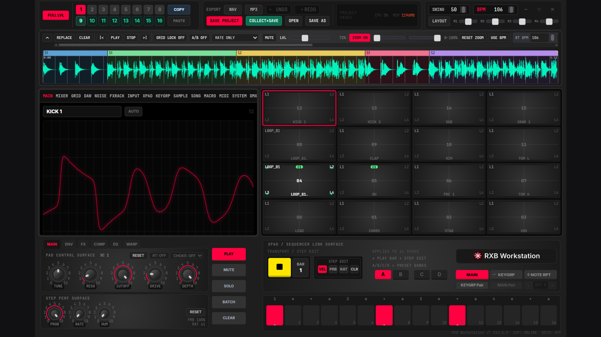

Draw a pattern, hear it change
A 32-step grid across sixteen pads, with per-step velocity, pan, probability and ratchet. Edits land under your hands while the transport runs.
Windows and iPad · Version 2.6.9 · Available now on Steam and the App Store
A pad-first production and mixing workstation. Nothing to arm, nothing to set up — every pad is playable the moment the app opens.

Turn any pad into NOISE, an analogue-style polysynth built into RXB Workstation. It has two oscillators with hard sync, a resonant 4-pole filter, poly mod, an LFO, unison and 24 factory presets. Then play it like an instrument from a MIDI keyboard, the on-screen keys or your computer keys, with pitch bend, the mod wheel and a sustain pedal. The MIXER also gets a full-screen view with all 16 strips at full height.
Updated 20 November. In the GRID, KEYGRP now shows the selected pad as its 16 keys (KEYS) or every pad’s own track (PADS). The octave can be changed in the GRID, in GRID MAXIMIZE and on the MAIN view, and the root note, scale and octave are saved with the project. CAPTURE LAST and XY WRITE are fixed in KEYGRP mode, and a GRID cell switches the moment a finger touches it.
A 32-step grid across sixteen pads, with per-step velocity, pan, probability and ratchet. Edits land under your hands while the transport runs.
Drums, music, vox, FX and backing each get their own summing bus with level, pan, mute and solo — so the drums fader actually means the drums.
A multi-lane DAW view for stems and backing tracks, sharing one timeline with your song sections.
Slice markers, automatic and equal division, and commit-to-pads — all non-destructive against the source file.
Song mode arranges scenes into sections with bar counts, half-bar granularity and per-step bank and tempo overrides.
Art-Net DMX output with a master dimmer, beat sync and eight lighting scenes, driven from the same transport as the music.
The factory sounds that ship with RXB Workstation were synthesised by its own audio engine. They are first-party content, and the licence grants you commercial use of anything you make with them — see the licence for the exact terms.
RXB Workstation 2.6.9 is available now for Windows on Steam and for iPad on the App Store. Each store keeps its copy installed and up to date.
RXB Workstation for iPad has the same pads, sequencer, mixer, FX and song mode. It leaves out Art-Net lighting and MIDI controller input.
The full user manual is published here, with numbered figures for every view and control.